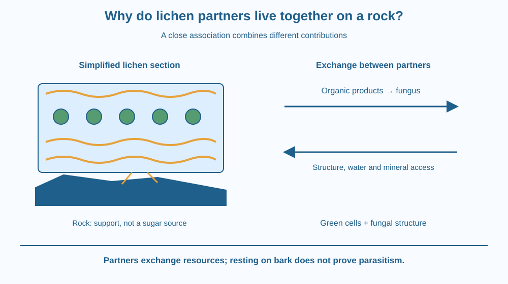

Explain a lichen as an integrated partnership rather than a tiny leafed plant. Identify the fungal partner and photosynthetic partner, trace the exchange between them, and distinguish growing on a rock or bark surface from taking food from a living host.
A pale crust spreads across a rock. A nearby patch has leaf-like lobes, although neither looks like an ordinary plant with stems and roots. These may be lichens, but identifying an unfamiliar patch requires more than its colour.
A lichen's visible body is formed through a close association. Looking only at its outside can hide the different organisms that contribute to its structure and nutrition. The interesting question is how partners with different capabilities can function together on a surface that supplies no ready-made leaf canopy.
A lichen is a close association involving a fungus and a photosynthetic partner, commonly a green alga or a cyanobacterium. Some lichens include more than one photosynthetic partner and additional microorganisms. The simple two-partner model explains the principal exchange without describing all of that complexity.
The photosynthetic partner can make organic materials using light. Here we treat that ability as a prerequisite rather than repeating the earlier lesson on how green plants use sunlight. The new question is how its products contribute to a shared living association.
The fungal partner forms much of the lichen's visible structure. Its network surrounds or contacts the photosynthetic cells and helps create their immediate environment. This structure contributes to protection and to holding or obtaining water and mineral nutrients.
Organic products from the photosynthetic partner support the fungus. In return, the fungal structure can provide a more protected setting and improved access to water and minerals. This division of roles helps explain why the association can occupy some places where either partner alone would behave differently.
This is often introduced as mutualism, a relationship in which both partners benefit. Real interactions are more complicated than a perfectly equal trade. Their balance can vary with species and conditions. A useful school model shows the main contributions without pretending every lichen operates like an identical business contract.
The combined body is called a thallus. Depending on the lichen, it can be crust-like, leaf-like or more branched. Leaf-like form does not make it an ordinary leaf, and attachment structures are not the same as the nutrient-absorbing roots of a flowering plant.
A lichen on tree bark is not automatically feeding parasitically on the tree. The bark can be a support surface. This is different from Cuscuta establishing a feeding connection to living transport tissues. Surface location and nutritional connection must be considered separately.
Water availability affects activity. Some lichens tolerate drying and become more active again when wetted, but responses vary. It is inappropriate to promise a universal growth rate or claim that every lichen can survive every extreme. The association's capabilities still depend on its partners and surroundings.
Draw a sheltered workshop. One partner contributes organic food; the other contributes the physical setting and helps manage access to water and minerals. Put arrows in both directions rather than drawing one organism simply eating another.
Then draw a rock underneath the workshop. Label it support. Do not add an arrow showing the rock supplying sugars, because that would confuse the supporting surface with the biological partner that makes organic products.
The model's limit is that the partners are not separate workers standing in a room. Their tissues are closely associated. The lichen's visible form emerges from that integration rather than from two independently shaped organisms merely sitting side by side.
The SVG shows a simplified section through a lichen. Fungal threads surround a row of green photosynthetic cells. A lower attachment region contacts a rock without entering a living vascular system.
Two resource arrows identify organic products moving toward the fungus and water or mineral access supported by the fungal structure. A protective upper layer is drawn above the partner cells. The section is schematic and does not represent every lichen anatomy.
A separate label distinguishes the support surface from the feeding partners. The diagram teaches resource exchange, not the use of lichens as air-quality indicators, which belongs to a different planned lesson.

Lichens can occur on rocks, old walls and tree bark in many landscapes, including parts of India. Their presence is an opportunity to ask what the surface provides and what the partners provide. The surface is not automatically a source of organic food.
A gardener who sees a lichen on bark should not conclude from location alone that the tree is being drained of sugar. A plant parasite needs a different kind of evidence, such as a feeding connection to living tissues.
Do not scrape lichens from heritage structures or natural rocks for this lesson. Photographs and diagrams show the association without damaging slow-growing patches or an important surface.
Use two colours of paper or pencils and a plain sheet. No specimen is needed.
Ask a partner whether your drawing accidentally gives the rock the job of making food. Correct that arrow if necessary. The model should also show more than two unconnected objects: the network must make contact with the partner cells to represent their close association.
Suppose a lichen becomes dry. Its physical structure remains visible, but the partners' activities may slow. Why would appearance alone be an incomplete measure of current biological activity?
Now compare a lichen on bark with a parasitic vine attached to a stem. What evidence distinguishes using a surface for support from obtaining resources through a living host connection? State the difference without assuming every organism found on a tree is harmful.
Which partners form the core of a simple lichen model?
Answer: C — The principal association includes a fungus and an alga or cyanobacterium.
What is an important contribution of the fungal partner?
Answer: B — Fungal tissues help form a protected setting and obtain or retain resources.
A lichen rests on tree bark. What follows from that observation alone?
Answer: A — Growing on bark does not by itself establish a parasitic feeding connection.
Make a three-part guide titled “Partner, support, or host?” Put a fungal partner and a photosynthetic partner in the first section, a rock beneath a lichen in the second, and a feeding parasite-host connection in the third.
Use arrows to show the relevant resource relationships. The guide should explain why the same visible situation, one organism sitting on another surface, can conceal very different biological relationships.
A shape that looks like one simple organism can arise from a close partnership. The familiar outline of a lichen does not reveal every contributor to its functioning. Understanding the exchange between partners can therefore explain more than naming its colour or deciding whether its outline looks leaf-like.
A lichen combines fungal structure with a photosynthetic partner; their resource exchange differs from merely resting on a rock or parasitising a host.